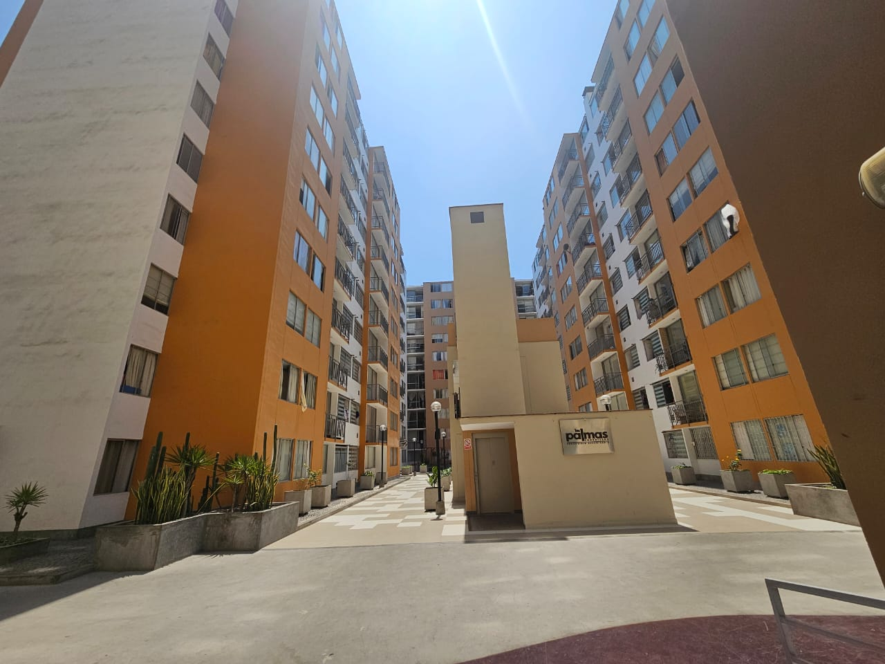

Kercado
El mercado interno de nuestra comunidad, donde comprar y vender es más cercano y seguro.
Lo más reciente
Qué es Kercado
Kercado es una plataforma digital exclusiva para los residentes, diseñada para fomentar el comercio local dentro de nuestra propia comunidad de forma rápida, práctica y confiable.
Con una interfaz intuitiva y accesible desde cualquier dispositivo, buscamos fortalecer los lazos vecinales facilitando el intercambio de productos y servicios cotidianos.
Un vecino compra y vende con la misma cuenta, utilizando el mismo usuario para ambas actividades sin necesidad de registros separados.
Cómo funciona
1. El vecino publica
Sube las fotos y los detalles del producto o servicio que deseas ofrecer en pocos minutos.
2. Otro vecino pide
Revisa las publicaciones disponibles y contacta al vendedor directamente para solicitar el artículo.
3. Acuerdan pago y entrega entre ellos
Definen los detalles finales de manera directa. Kercado no cobra ni reparte.
Para quién es
Kercado es solo para los residentes del condominio Las Palmas 357, así cada compra y cada venta queda entre vecinos que se conocen.
Vende
El vecino que prepara o tiene algo
Postres, menús caseros, abarrotes o un servicio, lo publica y sus vecinos lo ven al toque.
Compra
El vecino que busca algo cerca
Encuentra lo que necesita sin salir del condominio y lo recoge a unos pasos de su departamento.
Seguridad
Solo cuentas validadas
La administración revisa la torre y el departamento de cada vecino antes de activar su cuenta.
Métodos de pago
- Efectivo contra entrega
- Yape
- Plin
Kercado no procesa pagos, solo registra el método acordado.
Preguntas frecuentes
¿Tiene algún costo publicar en Kercado?
No, Kercado es totalmente gratuito y creado por la administración para fomentar el comercio interno entre vecinos.
¿Cómo valida la administración mi cuenta?
Al registrarte indicas tu torre y departamento; la administración corrobora que estés al día con el condominio antes de activar tu acceso.
Reglas de convivencia
- Mantén un trato respetuoso y cordial en todas las negociaciones con tus vecinos.
- Publica únicamente productos y servicios que cumplan con las normas de seguridad del condominio.
- Sé puntual y claro al acordar los puntos y horarios de entrega.
- Reporta cualquier inconveniente o uso inadecuado de la plataforma a los administradores.
- Verifica el estado del producto antes de concretar la transacción final.
Nosotros
Piero Alessandro Pérez Izquierdo
A cargo del panel.html y la integración general, tablas, estructura de página, funcionamiento y orden del repositorio.
Edgar Paolo Pérez Román
A cargo de index.html, la sección multimedia, las anclas del footer y la estructura general del inicio.
Francys Diego Yareta Cortez
A cargo de catalogo.html, producto.html, la tabla ficha y la estructura de la página con el aside.
Luis Alberto Huánuco Jiménez
A cargo de registro.html, el formulario completo y la gestión de todos los archivos multimedia del proyecto.